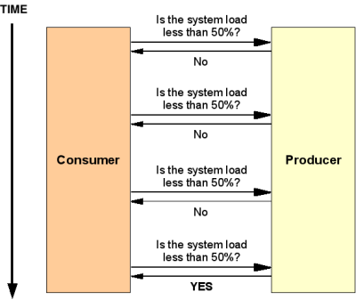
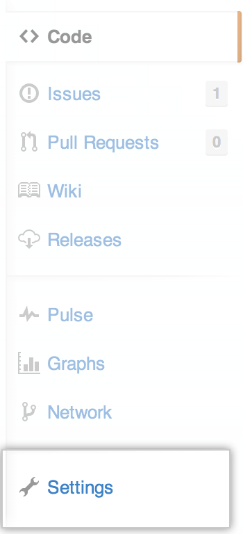
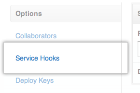
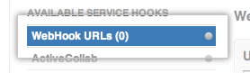
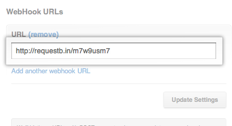
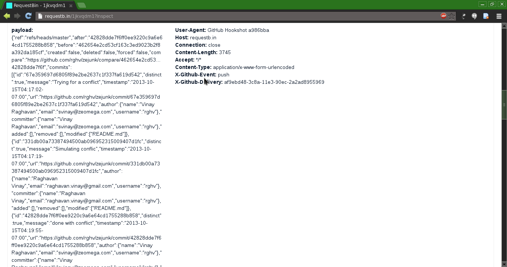

Webhooks or: How I learned to stop polling and love the web

Presentation created using reveal.js
In the olden days ...
Polling
Summary: inefficient
Webhooks
web apis - notify/feed
- Not exactly a new idea at all, been around since 2006
- Ex: PayPal IPN - instant payment notification
Who is using webhooks?
Google, Twitter, PayPal, Amazon
GitHub, Twilio, Wufoo, Shopify
Just to name a few ...
Okay; what exactly is a webhook?
- Summarily : event callbacks over HTTP
- Not a protocol, just a delivery mechanism
"When such-and-such thing happens, do a POST to so-and-so URL with this-and-that data."
Analogy - Telephone
- Calls are requests
- Caller is the client
- Receiver is the server
APIs and the Web
Think of standard UNIX pipes. { stdin - process - stdout/stderr }
Extend to APIs.
Example: GitHub
Example: GitHub
Example: GitHub
Example: GitHub
Example: GitHub

It's discussion time!
Offline questions: please drop a mail to svinay@zeomega.com